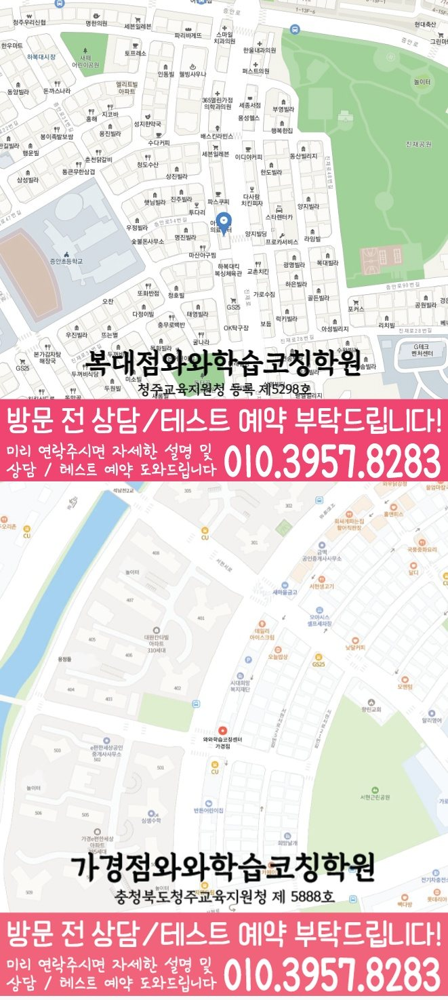

MIDDLE 3 MATH GUIDE
강서동 중3 수학학원
충청 청주시 강서동 중3 수학학원 선택을 위해 와와학습코칭센터 복대점 공개 정보를 바탕으로 중3 내신 준비와 고교 진입 전 개념 연결을 구분해 점검하고 상담 전에 준비할 자료와 운영 확인 항목을 정리했습니다.
강서동충청 청주시
중3수학 가능 학년 기재



핵심 답변
강서동 중3 수학학원, 무엇부터 확인해야 할까요?
강서동에서 중3 수학학원을 비교할 때는 선행 범위만 보지 말고 현재 학교 진도, 중1·중2 누적 공백, 서술형 근거, 오답 재확인과 시간 관리 기록을 함께 살펴야 합니다.
LOCAL ACADEMY GUIDE
충청 청주시 강서동 중3 수학 학습 설계
청주시 강서동에서 중3 수학학원을 찾는 학생들을 위해, 내신에서 자주 흔들리는 개념부터 유형별 문제풀이, 오답 관리와 실전 점검까지 이어지는 학습 흐름을 안내합니다. 와와학습코칭센터는 학생의 현재 실력과 시험 목표를 먼저 진단하고, 수업-과제-피드백이 연결되도록 코칭 중심으로 운영합니다.
강서동 중3 수학 수업의 핵심 포인트
문제부터 반복하기보다 중3 수학의 필수 개념을 먼저 정리하고, 학교 시험에 맞는 대표 유형부터 단계적으로 훈련합니다.
틀린 문제를 “다시 풀기”로 끝내지 않고, 계산 실수·조건 오해·개념 부족 같은 원인을 분류해 같은 실수를 줄입니다.
선생님 특징
어느 부분에서 막히는지 질문과 풀이 흐름으로 확인하고, 중3 수준에서 바로 적용 가능한 방식으로 다시 연결해 줍니다.
개념 정리, 문제풀이 루틴, 오답 노트 작성과 복습 타이밍을 함께 관리해 수업 시간이 성과로 이어지게 합니다.
수업 진행방식
1. 현재 수준 확인
중3 학년 진도, 최근 시험 성적, 자주 틀리는 유형을 바탕으로 부족 단원과 약점 포인트를 정확히 파악합니다.
2. 개념 정리와 내신 유형 학습
핵심 개념을 먼저 정리한 뒤, 학교 시험에서 반복되는 유형을 기준으로 문제 난이도를 조절해 학습합니다.
3. 오답 관리와 실전 피드백
오답을 유형별로 재구성하고 다음 풀이에서의 선택 기준(공식·조건·풀이 순서)을 정리해 실전력을 높입니다.
중3 수학 학습 전략(내신 중심)
기초 개념 보완
- 단원별 필수 개념을 “시험에 쓰는 형태”로 정리해 이해 공백을 빠르게 메웁니다.
- 기초 문제에서 흔들리는 부분을 먼저 잡아 실수가 줄어들도록 만듭니다.
유형별 반복 훈련
- 내신에서 자주 출제되는 유형을 중심으로 단계별(기본-응용)로 연습합니다.
- 문제 푸는 순서와 체크 포인트를 고정해 시간 소모를 줄입니다.
오답 패턴 제거
- 계산 실수, 조건 누락, 식 세우기 실패 등 오답 원인을 분류해 개선합니다.
- 오답을 다시 풀 때 “왜 틀렸는지”가 보이도록 재학습 흐름을 만듭니다.
시험 전 마무리
- 학생이 가져온 시험 범위를 확인한 뒤 약점 단원을 우선 복습하고, 예상 실수 유형을 점검합니다.
- 실전 풀이 연습으로 마무리해 중3 수학 성적을 안정적으로 끌어올립니다.
풀이 정확도와 검산 과정을 나누어 확인합니다. 상담을 통해 내신 목표와 약점 분석 결과를 바탕으로 학습 방향을 자세히 안내드립니다.
MIDDLE 3 MATH ROADMAP
충청 청주시 강서동 중3 수학 학습 설계
서원중를 기준으로 현재 단원과 이전 개념, 서술형 답안의 연결 상태를 함께 살펴봅니다. 기본 유형의 간격 재풀이가 안정된 뒤 조건이 달라진 문제로 확장합니다.
강서동 오답 원인에 따라 복습 순서를 나누는 방법
계산은 빠르지만 조건 표시와 검산을 생략해 작은 오류가 반복되는 학생이라면 고교 과정에 앞서 중학교 수학의 핵심 연결을 스스로 설명할 수 있는지부터 확인합니다. 중학교 개념을 외운 공식이 아니라 새로운 조건에 적용할 수 있는지 확인합니다.
식 세우기
계산을 시작하기 전에 조건이 어떤 식으로 이어지는지 학생이 말하게 합니다. 학생의 말 설명과 종이에 남은 식이 같은 흐름인지 대조합니다. 미완료 항목만 다음 주 계획으로 넘겨 과도한 반복을 줄입니다.
오답 분류
개념·조건·계산·시간 중 어느 원인인지 나누어 다음 행동을 정합니다. 학교 자료에서 확인되는 범위만 사용하고 미확인 내용은 추정하지 않습니다. 문제 수가 아니라 독립 해결 범위가 넓어졌는지 비교합니다.
독립 재풀이
수업 뒤 간격을 두고 같은 풀이를 해설 없이 재현할 수 있는지 봅니다. 완료된 문제와 다시 볼 문제를 주간 계획표에 각각 반영합니다. 한 주 뒤 학생이 근거를 다시 설명하는지 살펴봅니다.
검산 순서
답의 범위와 조건 충족 여부를 일정한 순서로 다시 확인합니다. 설명을 들은 문제와 혼자 해결한 문제를 서로 다른 표시로 남깁니다. 검산 시간을 포함해 시험 안에서 가능한 순서인지 확인합니다.
중학교 개념에서 고교 준비로 넘어가는 기준
서원중와 주간표를 대조해 실행 가능한 복습량을 계산합니다. 권장 확인 흐름은 시험지 분석 → 단원별 완료 기준 → 학교 자료 적용 → 오답 재확인입니다.
도형 조건
주어진 길이·각·평행 관계를 그림에 직접 표시한 뒤 성질을 선택합니다. 설명을 들은 문제와 혼자 해결한 문제를 서로 다른 표시로 남깁니다. 학교 범위 확정 전후의 완료 항목을 따로 비교합니다.
식 세우기
계산을 시작하기 전에 조건이 어떤 식으로 이어지는지 학생이 말하게 합니다. 숫자와 조건을 바꾼 문제에서도 같은 개념을 선택하는지 봅니다. 한 주 뒤 학생이 근거를 다시 설명하는지 살펴봅니다.
서술형 근거
조건·개념·식·결론이 답안에서 자연스럽게 이어지는지 점검합니다. 학교 자료에서 확인되는 범위만 사용하고 미확인 내용은 추정하지 않습니다. 학생이 사용할 검산 기준을 직접 말할 수 있는지 확인합니다.
함수 표현
표·식·그래프가 나타내는 같은 관계를 서로 바꾸어 설명하게 합니다. 기본 유형이 안정된 뒤 조건이 달라진 문제로 범위를 넓힙니다. 한 주 뒤 학생이 근거를 다시 설명하는지 살펴봅니다.
강서동 중3 수학의 다음 단계 판단 기준
조건 해석·계산·검산·시간 배분 중 반복되는 지점을 찾아 다음 수업과 주중 복습의 순서를 세웁니다. 기본 유형의 간격 재풀이가 안정된 뒤 조건이 달라진 문제로 확장합니다.
도형 조건
주어진 길이·각·평행 관계를 그림에 직접 표시한 뒤 성질을 선택합니다. 숫자와 조건을 바꾼 문제에서도 같은 개념을 선택하는지 봅니다. 현재 단원의 새 문제에 바로 적용되는지 결과를 남깁니다.
조건 해석
문제에서 주어진 조건과 구해야 할 값을 표시하고 사용할 개념을 고릅니다. 완료된 문제와 다시 볼 문제를 주간 계획표에 각각 반영합니다. 상담에서 실제 관리 기록의 예시를 확인할 질문으로 바꿉니다.
풀이 시간
정확한 풀이가 자리 잡은 뒤 문제 시간과 검산 시간을 따로 기록합니다. 기본 유형이 안정된 뒤 조건이 달라진 문제로 범위를 넓힙니다. 현재 단원의 새 문제에 바로 적용되는지 결과를 남깁니다.
독립 재풀이
수업 뒤 간격을 두고 같은 풀이를 해설 없이 재현할 수 있는지 봅니다. 질문할 부분을 먼저 표시한 뒤 필요한 개념만 짧게 복원합니다. 미완료 항목만 다음 주 계획으로 넘겨 과도한 반복을 줄입니다.
학교 진도와 누적 복습을 함께 유지하는 기록
시험 범위가 확정되기 전과 이후에 사용할 복습표를 나누어 준비합니다. 고교 과정에 앞서 중학교 수학의 핵심 연결을 스스로 설명할 수 있는지
조건 해석
문제에서 주어진 조건과 구해야 할 값을 표시하고 사용할 개념을 고릅니다. 질문할 부분을 먼저 표시한 뒤 필요한 개념만 짧게 복원합니다. 누적 복습이 학교 진도를 밀어내지 않는지 주간표로 확인합니다.
확률과 경우
경우를 나누는 기준이 겹치거나 빠지지 않았는지 표와 식으로 대조합니다. 학교 진도와 누적 공백을 한 표에 두되 완료 날짜는 나눕니다. 미완료 항목만 다음 주 계획으로 넘겨 과도한 반복을 줄입니다.
질문 기록
해설을 보기 전 시도와 막힌 부분을 표시해 필요한 설명 범위를 좁힙니다. 맞힌 문제와 틀린 문제의 첫 풀이 단계를 비교합니다. 학생이 사용할 검산 기준을 직접 말할 수 있는지 확인합니다.
식 세우기
계산을 시작하기 전에 조건이 어떤 식으로 이어지는지 학생이 말하게 합니다. 기본 유형이 안정된 뒤 조건이 달라진 문제로 범위를 넓힙니다. 서술형과 일반 풀이에서 같은 개념을 사용하는지 대조합니다.
서술형 근거
조건·개념·식·결론이 답안에서 자연스럽게 이어지는지 점검합니다. 숫자와 조건을 바꾼 문제에서도 같은 개념을 선택하는지 봅니다. 다음 과제에 같은 기준이 이어지는지 완료 기록을 확인합니다.
강서동 학부모는 문제량보다 풀이 근거와 검산 순서가 며칠 뒤에도 재현되는지 확인할 필요가 있습니다. 중학교 개념을 외운 공식이 아니라 새로운 조건에 적용할 수 있는지 확인합니다.
VERIFIED LOCAL FACTS
강서동 센터 정보와 확인 항목
센터정보 자료에 기재된 내용만 사용했으며 확인되지 않은 학교와 운영 조건은 임의로 만들지 않았습니다.
충북 청주시 흥덕구 진재로 37 3
공개 자료에 중3 수학이 포함되어 있으며 실제 반 편성과 일정은 상담에서 확인합니다.
청주교육지원청 등록 제5298호
주당 횟수·시간표·보강 기준과 함께 비교합니다.
증안초에서 하복대 방향 도보로 5분 / 아인동물병원 옆 건물 3층
공개 자료의 중학교 안내 · 3개
공개 자료의 수학 가능 학년
센터 교습비 자료 확인상담 전 체크리스트
강서동 중3 수학학원 비교 전에 적어둘 내용
최근 시험지, 오답노트와 질문 표시가 남은 현재 교재를 준비합니다.
고교 과정에 앞서 중학교 수학의 핵심 연결을 스스로 설명할 수 있는지
시험지 분석 → 단원별 완료 기준 → 학교 자료 적용 → 오답 재확인 흐름이 실제 일정에 가능한지 계산합니다.
공개 자료의 중3 수학 가능 학년과 실제 일정을 다시 확인합니다. 이번 비교에서는 오류 분류 항목을 보강 기준과 함께 확인합니다.
FAQ & PARENT VIEW
강서동 중3 수학학원 자주 묻는 질문과 학부모 상담 관점
화면 질문과 답변은 JSON-LD에도 동일하게 반영했습니다. 상담 관점은 실제 후기를 가장하지 않고 학부모가 확인할 비교 기준으로 정리했습니다.
강서동 중3 수학학원은 어떤 학생에게 맞는지 어떻게 보나요?
계산은 빠르지만 조건 표시와 검산을 생략해 작은 오류가 반복되는 학생이라면 설명 뒤 독립 풀이와 간격 재풀이를 어떻게 확인하는지 살펴보세요. 기본 유형의 간격 재풀이가 안정된 뒤 조건이 달라진 문제로 확장합니다. 강서동에서는 실제 풀이 기록과 주중 일정을 함께 놓고 이 기준을 확인하세요.
오답은 얼마나 간격을 두고 다시 확인하나요?
수업 직후 정리에 그치지 않고 주중과 누적 확인 시점을 나누는 것이 좋습니다. 시험지 분석 → 단원별 완료 기준 → 학교 자료 적용 → 오답 재확인이 실제 일정에 가능한지 확인하세요. 와와학습코칭센터 복대점 상담에서 이 항목이 다음 과제와 재풀이 날짜에 어떻게 반영되는지 질문하는 것이 좋습니다.
강서동 중3 수학학원 상담 전에 무엇을 준비하면 좋나요?
최근 시험지, 현재 교재, 학교 진도와 누적 오답을 준비하세요. 특히 고교 과정에 앞서 중학교 수학의 핵심 연결을 스스로 설명할 수 있는지를 메모하면 상담 기준이 구체적입니다. 상담 전에 고교 과정에 앞서 중학교 수학의 핵심 연결을 스스로 설명할 수 있는지를 적어 두면 관리 방식을 더 구체적으로 비교할 수 있습니다.
학교 내신 자료는 어떤 기준으로 활용하나요?
공개 센터 자료에는 복대중, 서원중, 솔밭중 등이 안내되어 있습니다. 실제 시험 범위와 일정은 학생이 가져온 학교 자료로 확인해야 합니다. 계산은 빠르지만 조건 표시와 검산을 생략해 작은 오류가 반복되는 학생이라면 문제 수보다 혼자 해결한 범위를 근거로 판단해야 합니다.
중3 수학 수강 가능 여부는 어디에서 확인하나요?
공개된 와와학습코칭센터 복대점 수학 가능 학년에 중3이 포함되어 있습니다. 실제 반 편성, 시간표와 시작 가능일은 상담에서 다시 확인해야 합니다. 계산은 빠르지만 조건 표시와 검산을 생략해 작은 오류가 반복되는 학생이라면 문제 수보다 혼자 해결한 범위를 근거로 판단해야 합니다.
상담할 때 교습비와 운영 조건도 함께 확인해야 하나요?
네. 교습비, 주당 횟수, 시작·종료 시각, 결석·보강 기준과 시험 기간 일정 변동을 같은 표에 적어 비교하는 것이 좋습니다. 실제 적용 범위는 학교 일정, 학생 진단과 복습 가능 시간을 확인한 뒤 정해야 합니다.
누적 공백이 있는 학생도 현재 진도를 이어갈 수 있나요?
현재 단원을 막는 이전 개념을 찾아 짧게 복원하고 바로 현재 문제에 적용하는 방식으로 범위를 조정할 수 있습니다. 실제 순서는 진단 결과로 정합니다. 상담 전에 고교 과정에 앞서 중학교 수학의 핵심 연결을 스스로 설명할 수 있는지를 적어 두면 관리 방식을 더 구체적으로 비교할 수 있습니다.
RELATED GUIDES
강서동 중2·중3 수학과 인접 지역 비교
같은 동네 중2 수학 안내와 시군구·광역권을 우선한 중3 수학 페이지를 연결했습니다.